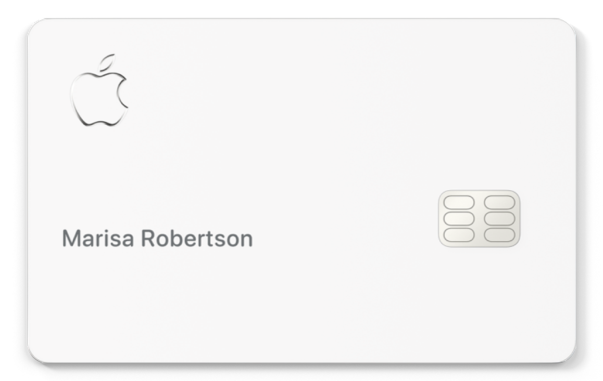

Building credit is one of the most important financial decisions you can make since you need credit for
lots of important things like loans, and mortgages. That being said starting to build credit
can be difficult since you can only get approved for a few credit cards. This is a list of the best
credit cards for beginners who have limited to no credit history but if you are a student we highly
recommend looking at student credit cards instead. Check out our top picks for student credit cards
here
Choosing the right credit card for you depends on your financial situation so this list aims to give a
wide variety of credit cards for beginners.
5. Apple Card

The Apple Card is a great credit card for beginners because of its easy-to-use interface and needs
minimal credit history to get approved. The Apple Card also has no annual fee and great cash-back
rewards. The Apple Card offers 3% cash back at select merchants like Nike, Apple, Uber, and more when
using Apple Pay, 2% cash back on all purchases when you use Apple Pay, and 1% cash back on all other
purchases. The Apple Card offers many benefits with no fees and a great user interface making it perfect for beginners.
The Apple Card also works seamlessly with Apple Wallet and Apple Cash making it perfect
for people using Apple devices.
Highlights:
• Minimal prior credit history needed
• Great cash back rewards
• Great user interface
These are the best credit cards for beginners that can help you start building credit, each of these cards is
useful and unique in its own way so hopefully, you were able to find something that suits your needs.
Disclaimer: The information provided on this website is for educational and informational purposes only.
It is not intended to be, nor should it be construed as, financial or investment advice.
thefinancialposts.com does not provide personalized financial advice or recommendations based on
individual circumstances. Should you need such advice, please consult a licensed financial or tax
advisor.